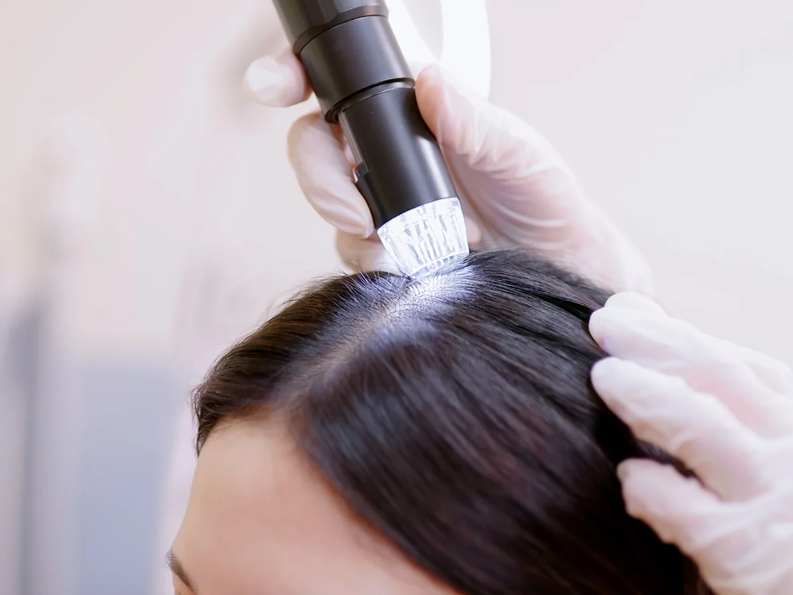
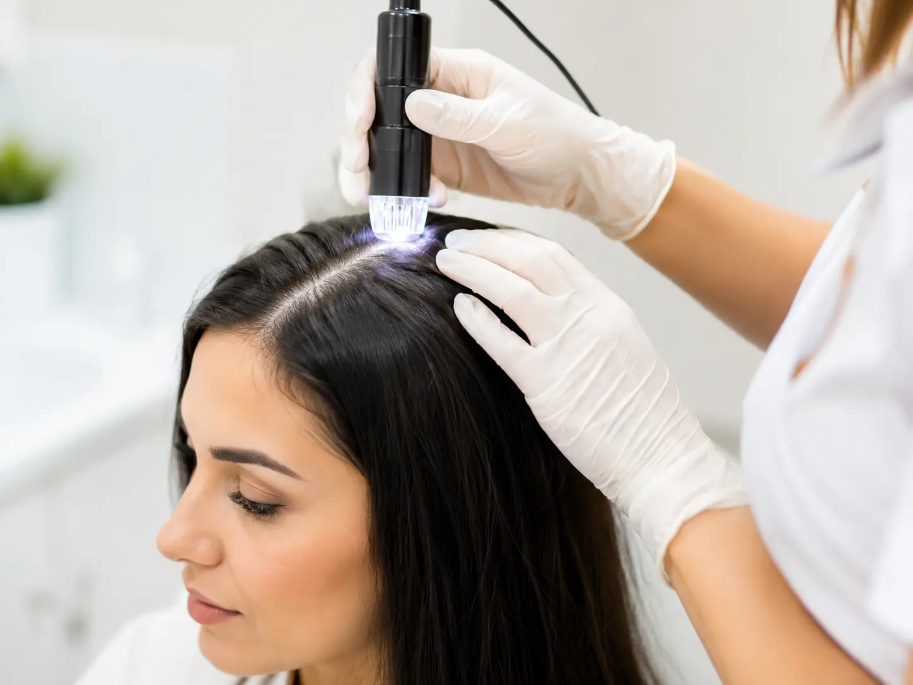
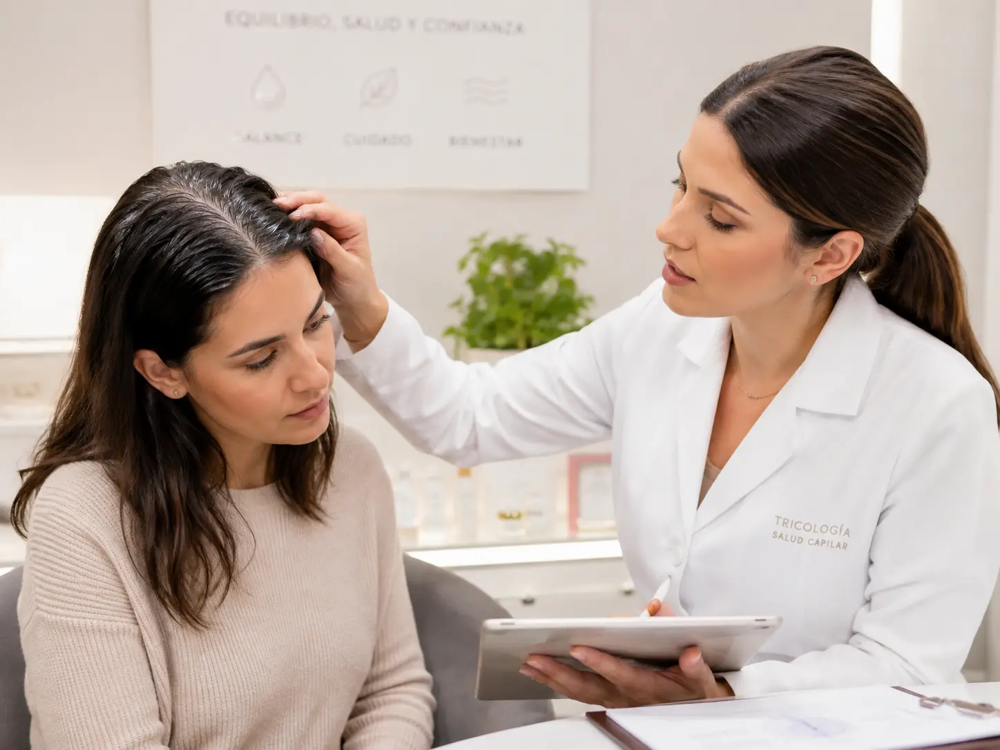
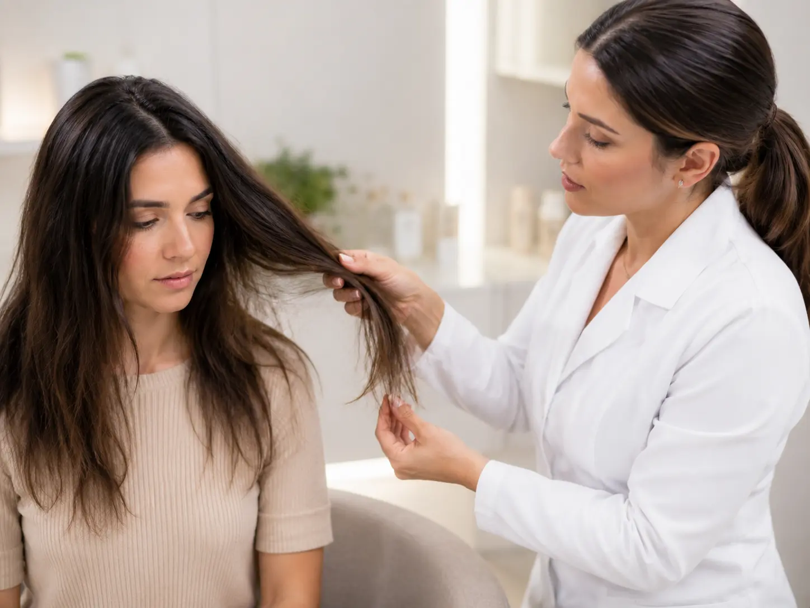
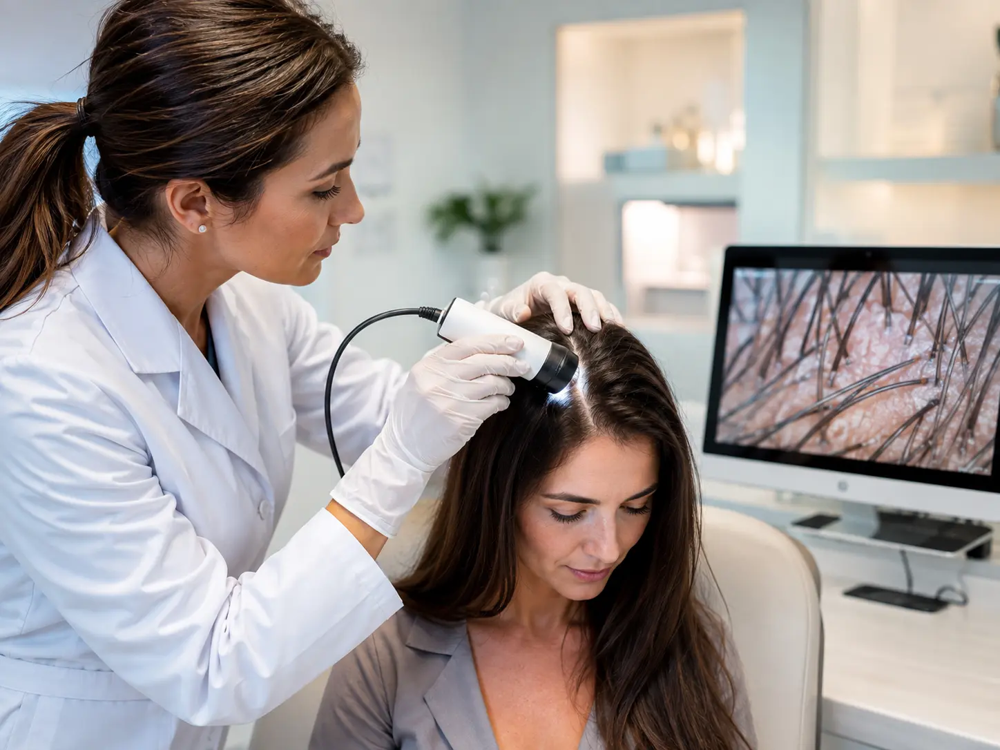
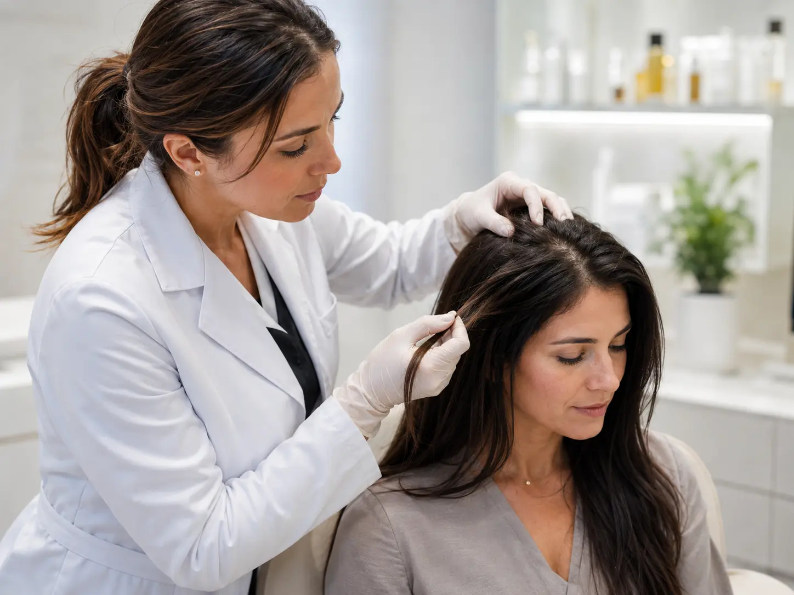
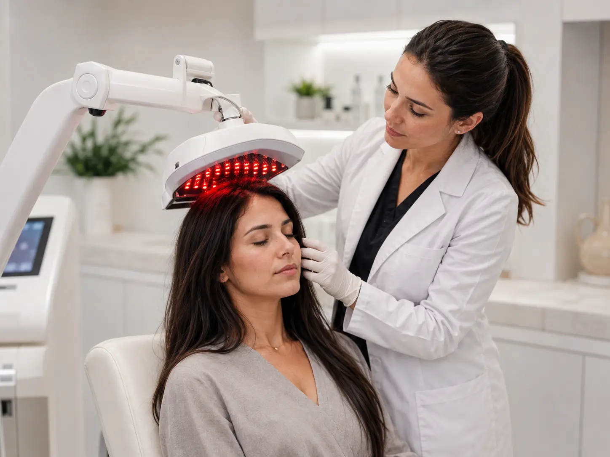
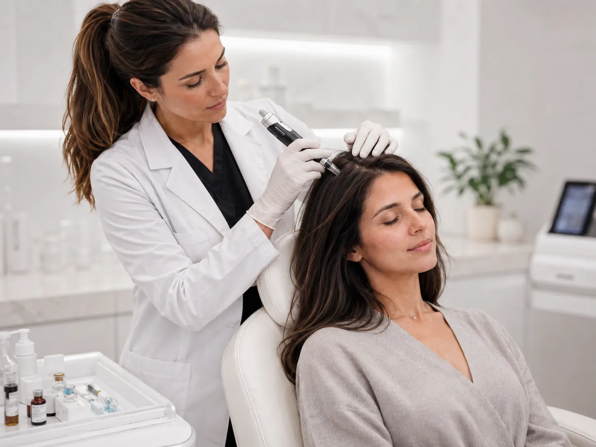
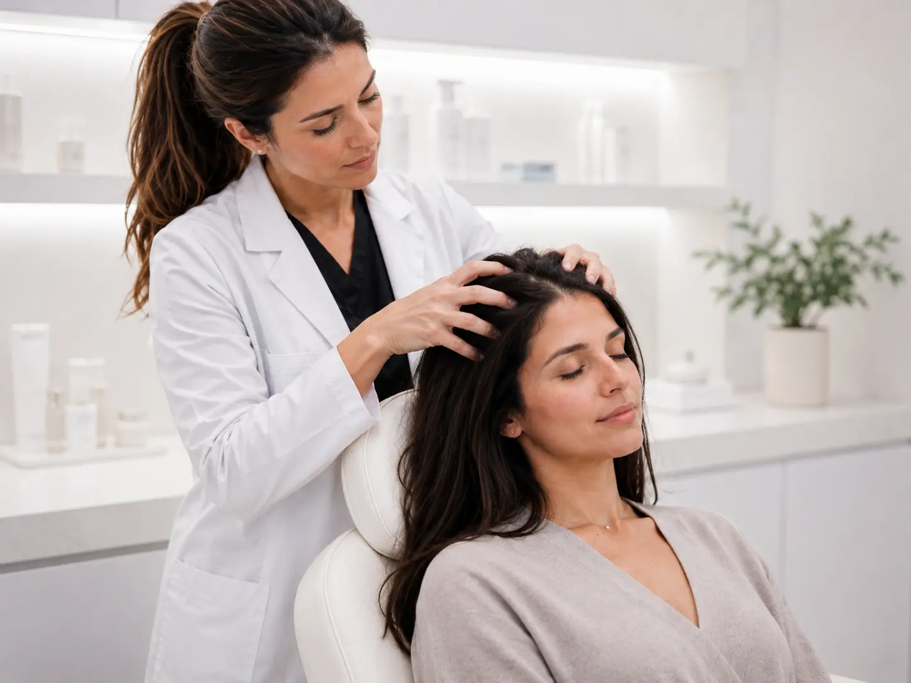

01
Caída y afinamiento
Valoración de caída del cabello, afinamiento, miniaturización y pérdida progresiva de densidad capilar.
Consultar mi caso ↗Centro capilar en Sant Cugat del Vallès
Especialistas en caída del cabello, afinamiento, pérdida de densidad, caspa, picor, grasa y alteraciones del cuero cabelludo. Valoración capilar, tricograma y seguimiento experto con Susana Serrano.

Problemas capilares frecuentes
Un buen tratamiento capilar empieza por identificar el estado del cuero cabelludo y del tallo. En Kapylar Center valoramos cada caso de forma personalizada antes de recomendar cuidados o terapias.
Valoración de caída del cabello, afinamiento, miniaturización y pérdida progresiva de densidad capilar.
Consultar mi caso ↗
02Estudio del cuero cabelludo con caspa, irritación, picor, rojeces o descamación para orientar el cuidado adecuado.
Solicitar valoración ↗
03Asesoramiento para grasa capilar, sebo excesivo y cuero cabelludo sensible, con seguimiento según evolución.
Consultar mi caso ↗
04Cuidado del tallo para rotura, porosidad, deshidratación, encrespamiento, falta de brillo o volumen.
Pedir asesoramiento ↗Método Kapylar
La metodología de Kapylar Center parte del diagnóstico capilar, el análisis del cuero cabelludo y el seguimiento. El objetivo es adaptar el cuidado a la situación real de cada persona.
Observación del cabello, cuero cabelludo, síntomas, hábitos y evolución.
Selección de cuidados, terapias o productos según las necesidades detectadas.
Rutina clara para favorecer equilibrio, higiene y cuidado capilar continuado.
Revisión del proceso para ajustar el plan cuando sea necesario.
Diagnóstico y tratamientos capilares
Recursos profesionales orientados al análisis del cabello y del cuero cabelludo, la salud dermocapilar y el seguimiento personalizado.

DiagnósticoEstudio profesional del estado del cabello y del cuero cabelludo para orientar la estrategia de cuidado capilar.
Más información →
Abordaje profesional de los desequilibrios del cuero cabelludo y del tallo capilar.
Consultar →
Terapia de láser de baja intensidad dentro de los recursos profesionales en los que Susana está formada.
Consultar →
Técnicas especializadas que se valoran de forma individual según necesidades, indicaciones y contexto.
Consultar →
Técnica manual especializada integrada en protocolos personalizados de cuidado del cuero cabelludo y del cabello, según las necesidades de cada caso.
Consultar →innovación aplicada · nuevas tecnologías
Sumamos dos nuevas herramientas para aportar más información a cada valoración: analíticas clínicas de biomarcadores y los nuevos tests epigenéticos. Datos complementarios para personalizar el acompañamiento con más contexto.
Analítica clínica · biomarcadores
Una analítica de sangre permite medir biomarcadores seleccionados por ejemplo, vitaminas, metabolismo u hormonas, según el panel. La muestra se analiza en laboratorio y los resultados aportan datos objetivos para entender mejor el contexto de cada persona y orientar el seguimiento.
Consultar Biomarcadores ↗Información epigenética
Kapylar Center incorpora los nuevos Tests Epigenéticos, que estudian marcadores relacionados con la actividad de los genes y con la influencia de hábitos y entorno. El informe aborda áreas como nutrición y metabolismo, piel y cabello, estrés y descanso, actividad física, envejecimiento biológico y respuesta a hábitos de vida.
Consultar Test Epigenético ↗Más información para una valoración más completa. Ambas herramientas amplían la información disponible en Kapylar Center y complementan la valoración profesional. Su alcance depende del panel o test realizado y no sustituyen una evaluación médica cuando esta sea necesaria.
Experiencia y especialización
Más de 27 años de experiencia en el sector profesional de la Salud y Belleza, especializada en el diagnóstico, análisis y estudio de afecciones y desequilibrios dermocapilares, así como en terapias y tratamientos capilares.
4º Premio · Congreso Internacional de Dermotricología 2017
Tratamiento de la Pitiriasis Esteatoide.
Valoración capilar
Solicita información sobre caída del cabello, caspa, picor, grasa, afinamiento, pérdida de densidad o cabello dañado. El mensaje se prepara automáticamente para WhatsApp.
Preguntas frecuentes
Información útil para personas que buscan un centro capilar en Sant Cugat y quieren saber cómo funciona una valoración profesional.
Se valora el estado del cabello y del cuero cabelludo, las señales visibles, los hábitos y la evolución del problema para orientar un plan de cuidado y seguimiento personalizado.
Puede ser útil ante caída del cabello, afinamiento, pérdida de densidad, miniaturización, caspa, picor, grasa, descamación o cambios persistentes en la calidad del cabello.
Sí. Kapylar Center trabaja el análisis y cuidado de desequilibrios del cuero cabelludo como caspa, picor, descamación, exceso de grasa, sensibilidad y deshidratación.
En Passeig de Francesc Macià, 72, Local 1, 08173 Sant Cugat del Vallès, Barcelona.
Kapylar Center incorpora analíticas de sangre para medir biomarcadores seleccionados. Según el panel, pueden incluir vitaminas, metabolismo, hormonas u otros parámetros. La muestra se analiza en laboratorio y los resultados aportan datos objetivos para complementar la valoración y el seguimiento.
El test epigenético estudia marcadores relacionados con la actividad de los genes y con factores como alimentación, descanso, estrés, actividad física y otros hábitos. Su informe aborda áreas como nutrición y metabolismo, piel y cabello, envejecimiento biológico, hábitos de vida y bienestar general, aportando información complementaria para personalizar el acompañamiento.
Centro capilar en Sant Cugat
Atención personalizada para diagnóstico capilar, caída del cabello y cuidado del cuero cabelludo en Sant Cugat del Vallès.